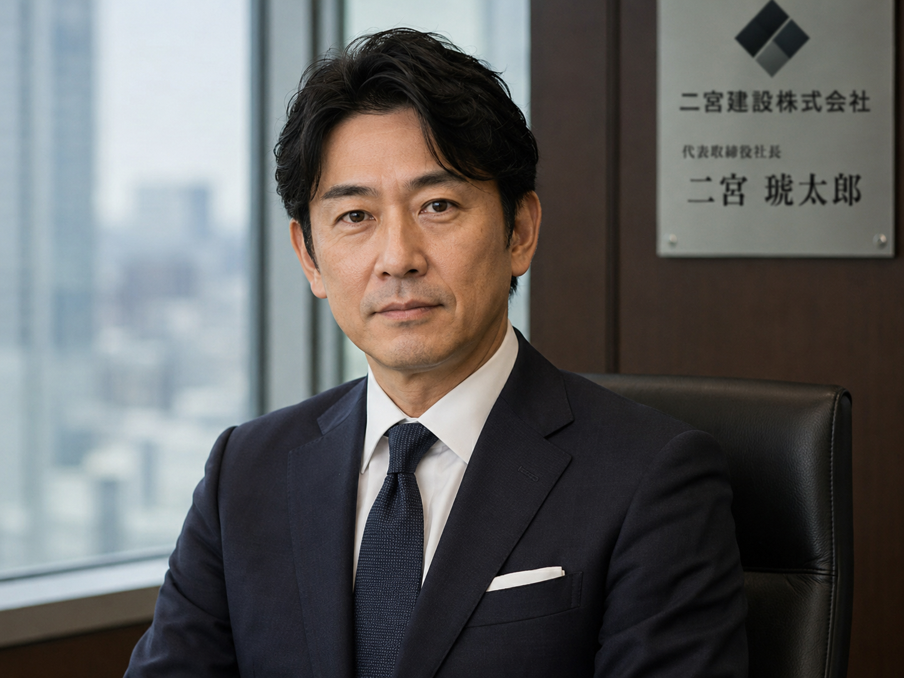

社名：二宮建設株式会社
代表取締役社長：二宮 琥太郎
設立：2003年4月
本社所在地：東京都千代田区（詳細非公開）
資本金：5億円
従業員数：128名
・総合建設事業
・都市開発および地域再生プロジェクト
・観光施設開発（テーマパーク等）
・山間部インフラ整備および資源活用事業

平素より格別のご高配を賜り、誠にありがとうございます。
当社は創業以来、「人と土地の価値を最大限に引き出す」という理念のもと、
数多くの建設・開発事業に取り組んでまいりました。
建設とは単なる構造物の創造ではなく、
そこに集う人々の未来を形づくる営みであると私たちは考えています。
近年では山間部における大規模開発プロジェクトにも着手し、
新たな可能性の創出に挑戦しております。
土地には、それぞれ固有の歴史と記憶が存在します。
私たちはそれらを尊重し、時に向き合いながら、
持続可能な価値を社会に提供してまいります。
今後とも一層のご支援を賜りますようお願い申し上げます。
二宮建設株式会社
代表取締役社長 二宮 琥太郎
・都市再開発プロジェクト（東京都）
・湾岸複合施設建設（神奈川県）
・地方創生型観光施設開発
・山間部テーマパーク開発（進行中）
当社では、次世代の建設を担う人材を募集しています。
・責任感のある方
・困難な環境にも適応できる方
・機密情報を厳守できる方
※業務内容の詳細は選考過程にてご説明いたします
※一部プロジェクト情報は公開制限されています
※特定地域に関する記録は現在確認中です
※過去データの一部に欠損が確認されています